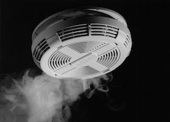

What You Should Know - Snap Circuits Electricity: Sensors and Fraction Models
 Important Vocabulary
Important Vocabulary
- Sensor - a device that can detect a change in the environment (such as light, color, temperature, or sound) and then does something in response (such as turn on a light, or turn on the air conditioning)
- Mixed Number - a whole number and a fraction combined into one "mixed" number
- Product - the result of multiplication
- Area - the total surface of an enclosed space
- Denominator - the bottom number in a fraction
Sensors Work Like Switches
Have you ever seen lights that turn on automatically when it gets dark, like street lights or the headlights on a car? How do they work?
Lights, like a headlight and a night light, often rely on a sensor that can detect light. Sensors respond to changes in their environment.
A smoke detector has a sensor that responds to smoke.

A thermometer responds to temperature.
Automatic doors have sensors that respond to motion.
Integrated Circuits Are Really Small Circuits
Modern technology allows us to make electronic parts so small that thousands, or even millions, can fit in an area smaller than the tip of your finger. These super-miniature parts are integrated (meaning they work together) in a circuit, so we call them integrated circuits, or IC’s. Other names for IC’s are microchips or just chips. IC’s allow us to create complex electronic devices that are small and inexpensive. They are used in electronic devices we use every day.
Fractions
A fraction is a numerical quantity that is not a whole number. In other words, it is a piece of something. Some common fractions include ½, ⅓, and ¼.
Fractions are used all the time in everyday life. When you order a pizza, it is divided into parts. This pizza is divided into eight sections or eighths. If you were to take one slice you would be taking ⅛ of the pizza. If you wanted to take half of the pizza, you would need to take 4 slices.
Building a Fraction Model
Fractions are important because they tell you what portion of a whole you need, have, or want. Fraction Models show fraction pieces and are helpful when finding the product of two fractions. In your project, you will use a visual fraction model to find the total area used on a circuit grid. To create a visual fraction model, follow these directions:
Creating a Visual Fraction
To create a visual fraction model to find the product of ¾ and ⅓:
- Divide the grid into four equal parts using vertical lines.
- Pick one color to represent the first fraction and color in three of the columns. This represents a fraction of ¾.

- Next, show ⅓ on the same grid.
- For this fraction, divide the grid into three equal parts using horizontal lines. This represents the denominator.
- Color one of those parts a different color to represent the second fraction.
- To see what the product of the fractions is, look at the part of the grid that is overlapped with two colors. You can see three boxes are shaded with two colors. This number represents the numerator.
- Count up the total boxes in the grid. This represents the denominator. This number is 12.
- The product of this visual fraction model is 3/12. You can simplify this fraction to ¼.
Career Connection and Real-World Application
Fractions in Careers
There are many careers that require the ability to multiply fractions. Some of these careers include engineering, carpentry, medicine, and banking.
In carpentry, you may need to figure out the fraction of space used to build on. This would require the multiplication of fractions. In carpentry, carpenters need to be able to properly measure the amount of carpet or materials needed for a job. Sometimes, there may be an overlap of materials. This would require carpenters to be able to multiply fractions.
Engineers use fractions too. Just like on your circuit, their job requires them to work with a variety of circuits and wires. The ability to multiply fractions as you did on a fraction model is very similar to their work on circuits and other electrical devices.